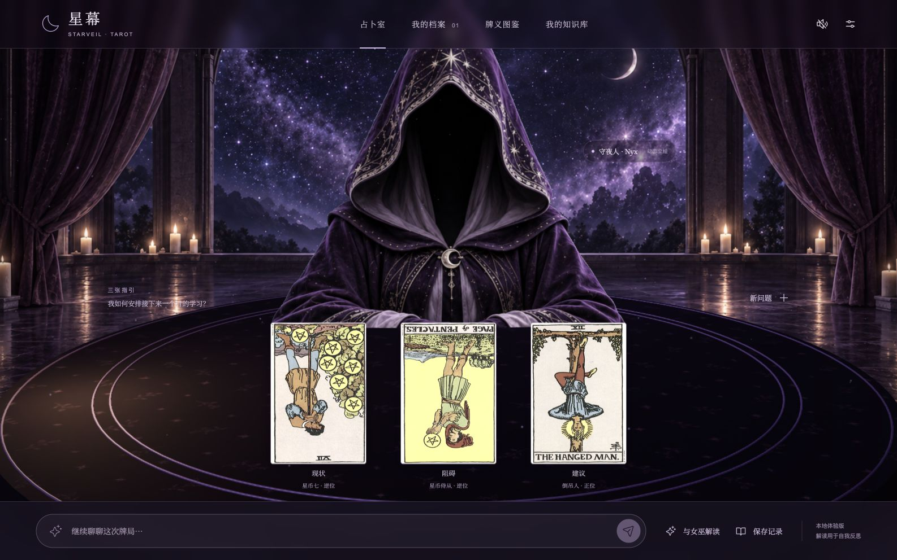

<!doctype html><html lang="zh-CN"><meta charset="utf-8"><title>星幕视觉对比</title><style>body{margin:0;background:#15101d;color:#eee;font:14px system-ui}main{display:grid;grid-template-columns:1fr 1fr;gap:12px;padding:12px}figure{margin:0}img{display:block;width:100%}figcaption{padding:12px 0}</style><main><figure><figcaption>概念图 · 视觉目标</figcaption></figure><figure><figcaption>第一版 · 浏览器动态立绘与 UI</figcaption></figure></main></html>
